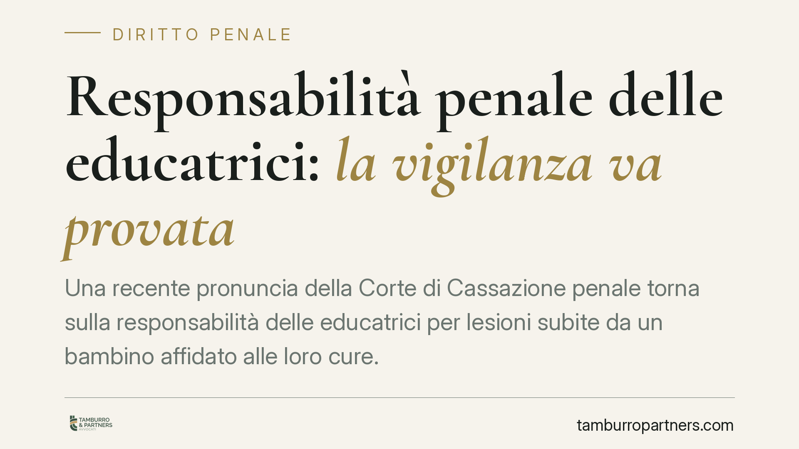

Responsabilità penale delle educatrici: la vigilanza va provata
Una recente pronuncia della Corte di Cassazione penale torna sulla responsabilità delle educatrici per lesioni subite da un bambino affidato alle loro cure. Il principio è duplice: la vigilanza è un obbligo effettivo e non delegabile, ma la condanna non può poggiare su accuse generiche. Serve la ricostruzione puntuale della condotta e del nesso causale.

Il caso
Una bambina viene ferita da un altro minore all'interno di una struttura tra nido e ludoteca. I genitori contestano alle educatrici di non aver vigilato, di aver "guardato altrove" nel momento decisivo. Il tema che arriva in Cassazione non riguarda solo l'esistenza dell'obbligo di sorveglianza, ma la sua traduzione in responsabilità penale: quando il "non aver visto" diventa reato.
La risposta della Corte è misurata. La posizione di chi ha in custodia bambini piccoli comporta un dovere di controllo rigoroso. Ma il rigore dell'obbligo non abbassa lo standard probatorio richiesto per condannare.
Inquadramento normativo
Il fulcro è l'art. 40, comma 2, del codice penale: "Non impedire un evento, che si ha l'obbligo giuridico di impedire, equivale a cagionarlo". È la cosiddetta clausola di equivalenza. Chi riveste una posizione di garanzia — cioè ha il dovere giuridico di proteggere un soggetto — risponde dell'evento dannoso come se lo avesse causato attivamente. L'educatrice che accoglie un minore assume esattamente questo obbligo di protezione.
Sul piano penale, l'ipotesi tipica è quella delle lesioni personali colpose ex art. 590 c.p.: si risponde per imprudenza, negligenza o imperizia, non per aver voluto l'evento. È qui che entra in gioco il nesso causale: occorre dimostrare che una condotta diligente avrebbe impedito il danno. Il giudizio è controfattuale — si ipotizza la condotta corretta omessa e si verifica se, adottandola, l'evento sarebbe stato evitato — secondo la regola del "più probabile che non".
Accanto alla sfera penale opera l'art. 2048 del codice civile, che disciplina la responsabilità civile di precettori e sorveglianti per il fatto illecito dei minori affidati, salvo prova di non aver potuto impedire il fatto. Sono due piani distinti: l'affermazione della responsabilità civile non implica automaticamente quella penale, che richiede la prova della colpa e del nesso oltre ogni ragionevole dubbio.
> Nota: gli estremi della pronuncia (numero e sezione) sono da verificare su banca dati ufficiale prima di ogni utilizzo processuale.
Implicazioni pratiche
Per chi lavora nei servizi per l'infanzia il messaggio è chiaro su entrambi i versanti.
Da un lato, l'obbligo di vigilanza è effettivo e non delegabile: non basta la presenza formale, serve un controllo concreto commisurato all'età dei bambini e ai rischi prevedibili. Distrazioni, carenze organizzative, rapporti numerici inadeguati tra personale e minori possono integrare la colpa.
Dall'altro, la Corte pone un limite garantista. Una condanna non può fondarsi sull'esito dannoso in sé, né su formule generiche del tipo "non ha vigilato". Va ricostruito cosa è accaduto, quando, e quale condotta alternativa avrebbe evitato l'evento. Se l'aggressione è stata improvvisa e imprevedibile, il nesso causale può mancare: non ogni incidente è un reato.
Per i genitori, il rovescio della medaglia è che la denuncia va sostenuta da elementi circostanziati. Per le educatrici e per le strutture, la miglior difesa è la tracciabilità dell'organizzazione: turni, rapporti numerici, protocolli.
Cosa fare in concreto
- Documentate l'organizzazione della vigilanza: rapporti numerici personale-bambini, turnazioni, procedure interne. La prova della diligenza si costruisce prima dell'evento, non dopo.
- Ricostruite subito la dinamica in caso di incidente: annotate orari, presenze, sequenza dei fatti, eventuali testimoni. La memoria si deteriora in fretta.
- Distinguete i piani di responsabilità: un'azione risarcitoria civile e un procedimento penale seguono regole probatorie diverse e vanno gestiti separatamente.
- Verificate la copertura assicurativa della struttura e i suoi limiti, prima che si presenti un contenzioso.
- È opportuno acquisire assistenza legale prima di rendere dichiarazioni a verbale o di sottoscrivere ricostruzioni dei fatti: una descrizione approssimativa può pesare in entrambe le sedi.
In sintesi
La posizione di garanzia dell'educatrice è reale e stringente, ma non trasforma ogni infortunio in reato. Rigore dell'obbligo e rigore della prova viaggiano insieme: senza ricostruzione puntuale della condotta e del nesso causale, la responsabilità penale non può dirsi accertata.
---
Contributo informativo a cura di Tamburro & Partners Avvocati. Non costituisce parere legale.
Ogni condominio ha una storia a sé.
Se gestisci un'amministrazione e vuoi un confronto su una specifica questione condominiale, scrivi allo studio. Ti rispondiamo entro un giorno lavorativo.